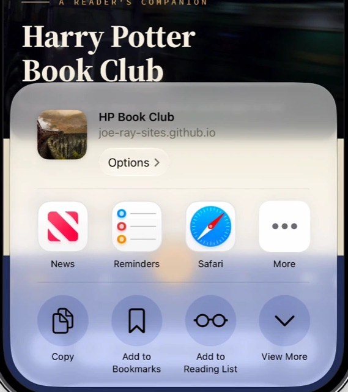
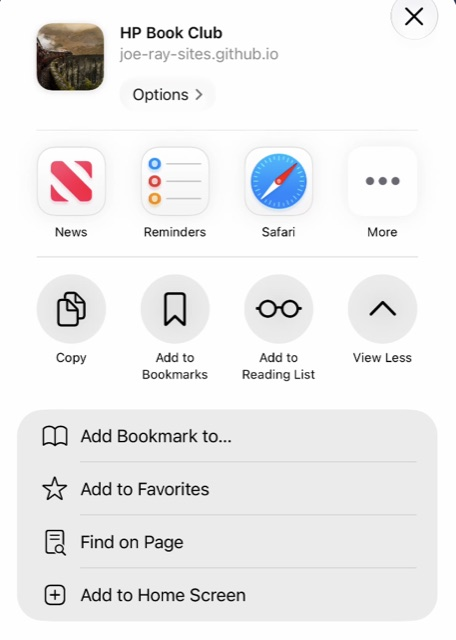

It does not do to dwell on dreams and forget to live.
How to use this app
01
For the book club
Questions and topics for each of the seven books, to talk through together.
menu_book
02
The reading companion
All seven books laid out chapter by chapter, with notes on the reading experience.
03
Games
Quizzes and interactive games from the wizarding world.
headphones
04
Audiobooks
Stream the homemade recordings of every book, and pick up where you left off.
The Club
Book Club
Pick a subject to open it below.
The Library
The Seven Books
From HarryPotter.com
J.K. Rowling Originals
Explore the inner workings of the wizarding world with a collection of writing from J.K. Rowling.
Opens on HarryPotter.com in a new tab
Play
Games
Pick a game, then play it through.
Listen
Audiobooks
I solemnly swear that I am up to no good.
graphic_eqPlayer
Tap a chapter to begin
0:00—
Book 1
Harry Potter and the Sorcerer’s Stone
edit_noteNotes
auto_stories
Title
Choose Your House
Draco Dormiens Nunquam Titillandus
Never tickle a sleeping dragon
Hogwarts School of Witchcraft and Wizardry
Choose Your House
Four friends founded the school together — Godric Gryffindor, Helga Hufflepuff, Rowena Ravenclaw and Salazar Slytherin — and each left behind a house that carries their name and their temperament. On a first-year’s first night the Sorting Hat weighs what it finds and names the house that will be home for seven years: the common room, the table in the Great Hall, the friends who become family.
Pick the house whose colours the app should wear. Everything else stays exactly where it is, and you can change your mind any time.
Courage · Determination · Bravery
Gryffindor
Founder
Godric Gryffindor
Emblem
The lion
Colours
Scarlet and gold
Head of House
Professor Minerva McGonagall
House ghost
Nearly Headless Nick
The lion’s house prizes nerve above all else. Gryffindors are the ones who step forward when stepping back would be easier — sometimes before they have quite thought it through. Godric Gryffindor wanted the brave, and his house has kept that bargain for the better part of ten centuries.
This is Harry’s house, and Hermione’s and Ron’s, along with every Weasley who ever climbed the tower stairs. Professor McGonagall keeps it in line, stern and kind in equal measure; Nearly Headless Nick drifts through its corridors; and Albus Dumbledore himself once wore its scarlet and gold.
Dedication · Patience · Loyalty
Hufflepuff
Founder
Helga Hufflepuff
Emblem
The badger
Colours
Yellow and black
Head of House
Professor Pomona Sprout
House ghost
The Fat Friar
The badger’s house is built on steadiness. Hufflepuffs do the work — the long, unglamorous, necessary work — and they do it for one another rather than for applause. Helga Hufflepuff would take in anyone willing to learn, whatever their background, and hers has been the fairest house at the school ever since.
Professor Sprout tends it from the greenhouses, and the Fat Friar is its cheerful ghost. Its ranks have held Cedric Diggory, the Triwizard champion the whole school mourned; Nymphadora Tonks of the Order of the Phoenix; and Newt Scamander, who quite literally wrote the book on fantastic beasts.
Learning · Wit · Wisdom
Ravenclaw
Founder
Rowena Ravenclaw
Emblem
The eagle
Colours
Blue and bronze
Head of House
Professor Filius Flitwick
House ghost
The Grey Lady
Ravenclaw is the house of the curious. Its students would rather understand a thing than merely pass the exam on it, and they are generous with what they learn — first to explain, last to leave the library. Rowena Ravenclaw’s diadem carried the house’s creed: “wit beyond measure is man’s greatest treasure.”
Luna Lovegood is its most singular member and Cho Chang one of its most capable; Moaning Myrtle, a Ravenclaw in life, still haunts a second-floor bathroom. The Grey Lady who drifts through its tower is Helena Ravenclaw, the founder’s own daughter.
Ambition · Pride · Cunning
Slytherin
Founder
Salazar Slytherin
Emblem
The serpent
Colours
Green and silver
Head of House
Professor Severus Snape, later Professor Horace Slughorn
House ghost
The Bloody Baron
The serpent’s house is for the ambitious — students who know what they want and can see the path to it several moves ahead. Salazar Slytherin’s house has produced more than its share of Dark wizards, Tom Riddle chief among them, and it has never quite shaken that reputation. But resourcefulness, fierce loyalty to their own and sheer determination are Slytherin traits too.
Severus Snape and, after him, Horace Slughorn served as Head of House during Harry’s years; Draco Malfoy was its most visible student of that era. The Bloody Baron is its grim ghost, and its common room lies beneath the lake, down in the dungeons of the castle.
Your choice is kept on this device only. Colorblind Mode, in the same menu, overrides every house with pure black and white.
Download the App
Harry Potter Book Club
Download the App
Your browser can install it in one tap — or follow the steps below.
01Open the Share menu
In Safari, tap Share — the square with the arrow, at the bottom of the screen or inside the ··· menu — then tap View More.

02Add to Home Screen
Near the foot of the longer list, tap Add to Home Screen.

03Tap Add
Leave Open as Web App switched on, then tap Add. The Deathly Hallows appears on your Home Screen as HP Book Club.
Using Chrome or another browser on your iPhone? The same option is in its Share menu. If this page opened inside another app — Messages, Instagram, Mail — open it in Safari first. On Android, look for Install app in the browser menu.